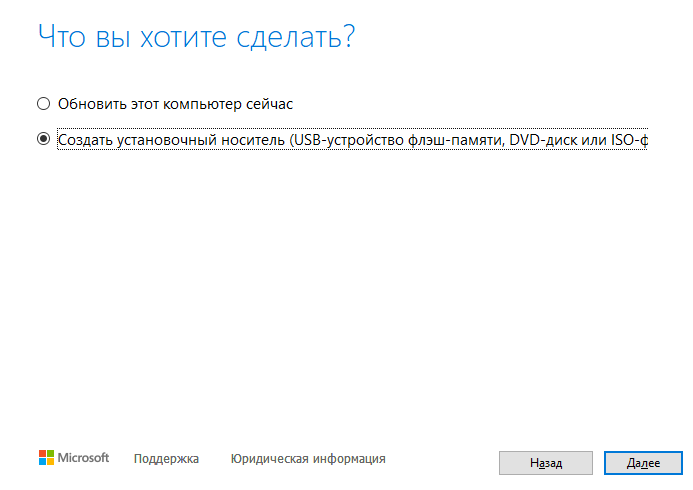
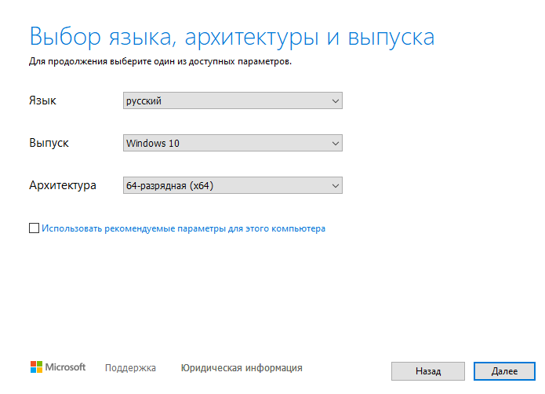
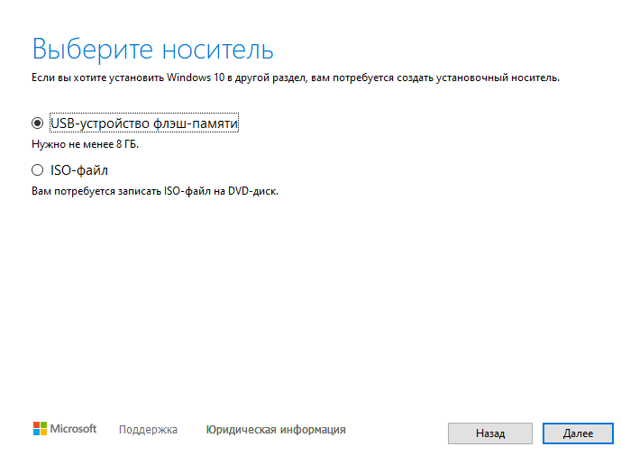
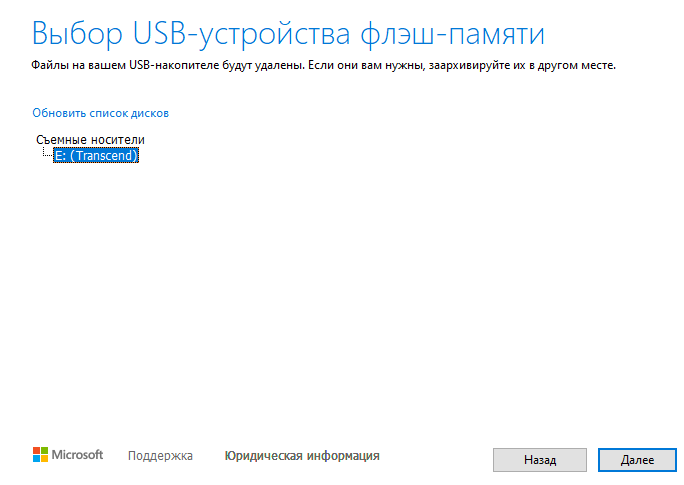
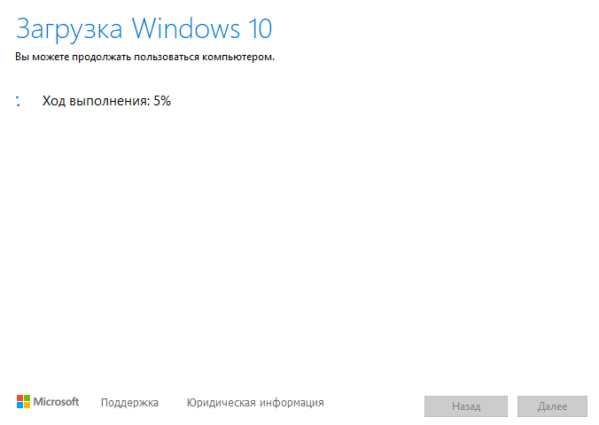
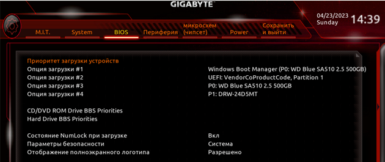
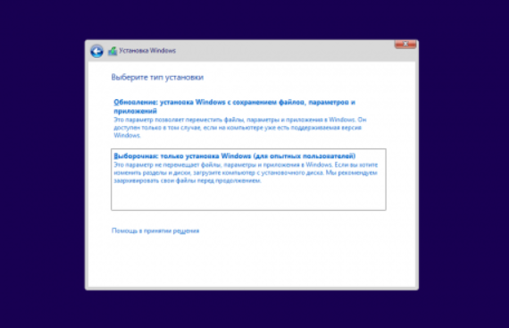
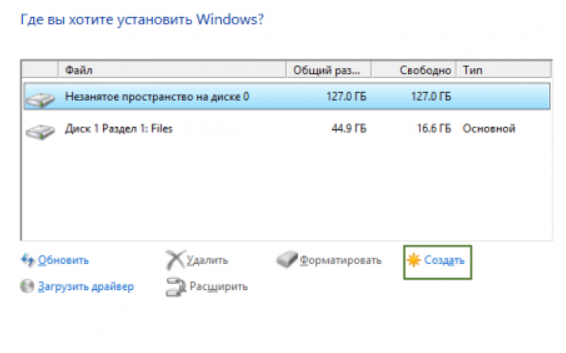

Тут всё проще некуда. Заходим на официальный сайт Microsoft и скачиваем там средство установки Windows. Лично я пока сижу на десятке, одинадцатая винда пока ещё не очень стабильна.
Берём флешку объёмом не менее 8 гигабайт, вствляем её в ПК с уже установленной системой, и запускаем средство установки. После его загрузки принимаем лицензионное соглашение и затем выбираем пункт "Создать установочный носитель" и жмём далее.
Выбираем 64-разрядную версию системы
Выбираем USB устройство flash памяти.
Выбираем нашу флешку.
И ждём.
По окончанию работы программа создаст готовый установочный носителоь с системой. После чего вставляем его в наш новоиспечонный ПК и включаем его. Для того чтобы зайти в биос, после включения ПК нужно несколько раз нажимать клавишу Delete, либо F12, либо F1. Попав в биос вам нужно зайти в advanced mode и найти вкладку BOOT и приоритете загрузки №1 выбрать вашу флешку.
Выходим из биоса с сохранением настроек, дожидаемя пока ПК перезагрузится и попадаем в установочник. В открывшемся окне выбираем языковые параметры и жмём на кнопку установки.
Принимаем условия лицензии и в следующем окне выбираем тип установки - выборочная.
Далее создаём раздел на диске на который будет установлена система. Если в вашем компе есть SSD, то систему нужно устанавливать именно на него. 
После выбора диска начнётся процесс установки. По его завершению ПК перезагрузится, во время перезагрузки заходим в биос и ставим на опцию загрузки №1 тот диск куда вы установили систему. Выходим из биоса сохранив настройки.
Далее начнётся процесс првоначальной настройки, там всё просто и понятно, скажу лишь что при создании учётки хорошо бы создать локальную учётную запись, если установочник нивкакую не даёт вам этого сделать, то в поле имя пользователя нужно написать "admin". Так же отключаем всю телеметрию и тому подобное.
Вот и всё, система установлена, десятка ставит почти все драйвера сама, остаётся поставить лишь дрова на видеокарту, их вы можете скачать на официальном сайте производителя вашей видеокарты, ну а дальше, я думаю вы знаете что делать. Не забываем погнать нашу оперативку, включив в биосе XMP профиль оперативной памяти, если таковой поддерживается, и вперёд тестировать новый комп!